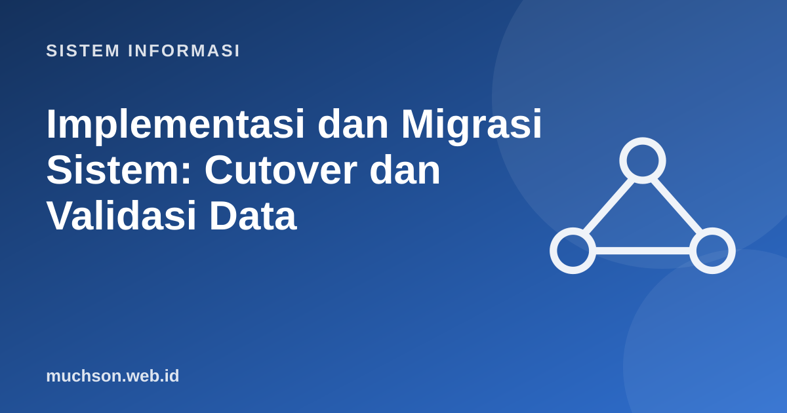

Beranda › Artikel › Sistem Informasi
Sistem InformasiImplementasi dan Migrasi Sistem: Cutover dan Validasi Data
Hari peluncuran adalah saat paling berisiko dalam proyek: data lama harus pindah dengan benar, pengguna harus siap, dan bisnis tidak boleh berhenti. Banyak proyek yang berhasil dibangun gagal justru pada tahap ini. Kuncinya: strategi peralihan yang tepat, migrasi data yang dapat diverifikasi, dan rencana mundur yang nyata.
Sebaiknya sudah paham: SDLC, pengujian sistem

Setelah membaca dan mencoba materi ini, Anda mampu:
- membandingkan strategi cutover: big bang, paralel, pilot, dan bertahap
- merencanakan migrasi data: pemetaan, pembersihan, pemuatan, dan validasi
- melakukan rekonsiliasi data sebelum dan sesudah migrasi dengan skrip
- menyusun daftar periksa go-live dan rencana mundur
- melakukan review pascaimplementasi
Strategi peralihan
| Strategi | Cara | Kelebihan | Risiko |
|---|---|---|---|
| Big bang (langsung) | Pada tanggal tertentu, sistem lama dimatikan dan baru dinyalakan | Cepat, tanpa dua sistem | Risiko tertinggi; kegagalan memengaruhi semua |
| Paralel | Sistem lama dan baru berjalan bersamaan untuk periode tertentu; hasil dibandingkan | Aman, ada pembanding | Beban kerja ganda, biaya tinggi |
| Pilot | Diterapkan di satu unit atau lokasi dulu, lalu diperluas | Pembelajaran sebelum skala penuh | Perlu mengelola dua cara kerja sementara |
| Bertahap (phased) | Modul atau fitur dirilis bertahap | Risiko terbagi, pengguna belajar bertahap | Integrasi sementara antara lama dan baru |
Migrasi data
import sqlite3
lama = sqlite3.connect(":memory:")
baru = sqlite3.connect(":memory:")
lama.executescript("""
CREATE TABLE pelanggan (id INTEGER, nama TEXT, saldo REAL, status TEXT);
INSERT INTO pelanggan VALUES (1,'Ani',150000.50,'A'),(2,'Budi',0,'A'),(3,'Citra',75000,'N'),(4,'Dodi',200000,'A'),(5,'Eka',50000.25,'A');
""")
baru.executescript("""
CREATE TABLE pelanggan (id INTEGER PRIMARY KEY, nama TEXT NOT NULL, saldo_rp INTEGER NOT NULL, aktif INTEGER NOT NULL);
""")
# transformasi: kode status lama -> boolean; saldo desimal -> bilangan bulat rupiah (dibulatkan)
for (id_, nama, saldo, status) in lama.execute("SELECT * FROM pelanggan"):
if id_ == 4: # simulasikan record gagal dimigrasi
continue
baru.execute("INSERT INTO pelanggan VALUES (?,?,?,?)", (id_, nama, round(saldo), 1 if status == "A" else 0))
# validasi rekonsiliasi
def hitung(db, sql): return db.execute(sql).fetchone()[0]
n_lama, n_baru = hitung(lama, "SELECT COUNT(*) FROM pelanggan"), hitung(baru, "SELECT COUNT(*) FROM pelanggan")
total_lama, total_baru = round(hitung(lama, "SELECT SUM(saldo) FROM pelanggan")), hitung(baru, "SELECT SUM(saldo_rp) FROM pelanggan")
print("jumlah record : lama", n_lama, "| baru", n_baru, "->", "OK" if n_lama == n_baru else "TIDAK COCOK")
print("total saldo : lama", total_lama, "| baru", total_baru, "->", "OK" if abs(total_lama - total_baru) <= n_lama else "TIDAK COCOK")
hilang = {r[0] for r in lama.execute("SELECT id FROM pelanggan")} - {r[0] for r in baru.execute("SELECT id FROM pelanggan")}
print("id belum termigrasi:", sorted(hilang))
aktif_lama = hitung(lama, "SELECT COUNT(*) FROM pelanggan WHERE status='A'")
aktif_baru = hitung(baru, "SELECT COUNT(*) FROM pelanggan WHERE aktif=1")
print("pelanggan aktif: lama", aktif_lama, "| baru", aktif_baru)jumlah record : lama 5 | baru 4 -> TIDAK COCOK
total saldo : lama 475001 | baru 275000 -> TIDAK COCOK
id belum termigrasi: [4]
pelanggan aktif: lama 4 | baru 3
Aturan: jangan menganggap migrasi sukses karena tidak ada error. Buktikan dengan angka: jumlah baris, total kendali (saldo, kuantitas), dan pemeriksaan sampel oleh pengguna bisnis yang memahami datanya.
Daftar periksa go-live
Rencana mundur
Rencana mundur menentukan kapan dan bagaimana kembali ke sistem lama bila peluncuran bermasalah. Tentukan kriteria (misalnya "bila transaksi gagal lebih dari 2% dalam 2 jam pertama"), siapa yang berwenang memutuskan, dan langkah teknis pemulihan. Rencana yang tidak pernah dilatih sering tidak berfungsi ketika dibutuhkan.
Pemeliharaan dan review pascaimplementasi
| Jenis pemeliharaan | Tujuan | Contoh |
|---|---|---|
| Korektif | Memperbaiki cacat | Memperbaiki perhitungan IPK yang salah |
| Adaptif | Menyesuaikan dengan perubahan lingkungan | Pembaruan karena perubahan regulasi atau sistem operasi |
| Perfektif | Menyempurnakan fitur dan kinerja | Menambahkan laporan, mempercepat kueri |
| Preventif | Mencegah masalah di masa depan | Refaktor, pembaruan pustaka, peningkatan pemantauan |
Beberapa minggu atau bulan setelah peluncuran, lakukan review pascaimplementasi: apakah tujuan bisnis tercapai (bandingkan dengan studi kelayakan), apa yang berjalan baik, apa yang perlu diperbaiki, dan pelajaran untuk proyek berikutnya.
1. Mengapa uji coba migrasi dilakukan berkali-kali?
2. Sebutkan tiga total kendali untuk memvalidasi migrasi data keuangan.
3. Kapan big bang masih layak dipertimbangkan?
4. Apa yang harus ada dalam rencana mundur?
- Strategi cutover: big bang, paralel, pilot, bertahap; pilih menurut risiko dan biaya.
- Migrasi data: pemetaan, pembersihan, uji berulang, migrasi akhir, validasi.
- Rekonsiliasi dengan jumlah record, total kendali, dan sampel membuktikan keberhasilan.
- Go-live perlu daftar periksa, hypercare, dan rencana mundur yang teruji.
- Review pascaimplementasi menutup siklus dan memberi pelajaran.
Tanya jawab
Berapa lama hypercare?
Apa itu feature flag dan canary release?
Siapa pemilik keputusan go/no-go?
Referensi
- Kenneth C. Laudon dan Jane P. Laudon, Management Information Systems: Managing the Digital Firm (Pearson)
- Kenneth Kendall dan Julie Kendall, Systems Analysis and Design (Pearson)
- Martin Fowler: Blue Green Deployment
- Google SRE Book: Launch Coordination Checklist